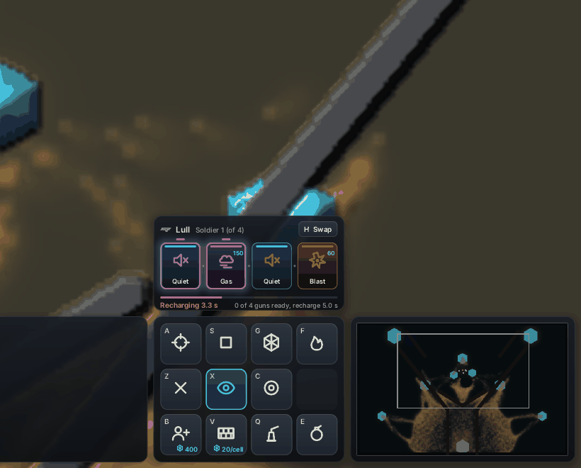
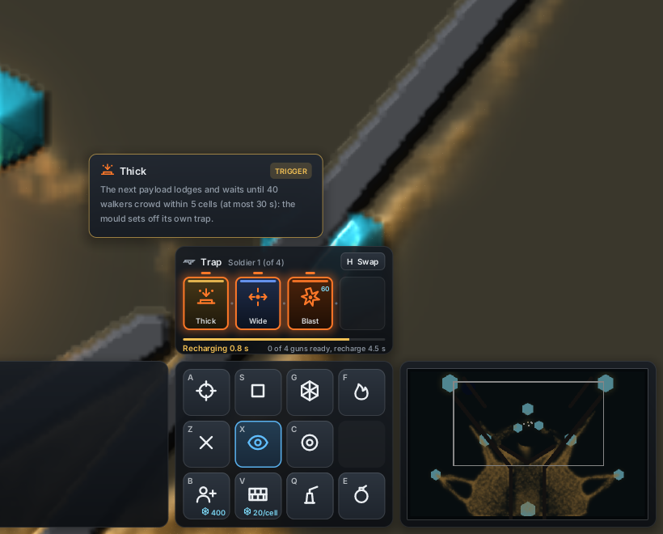
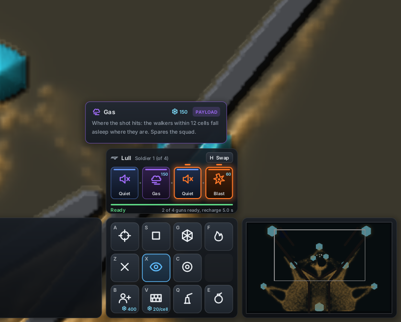
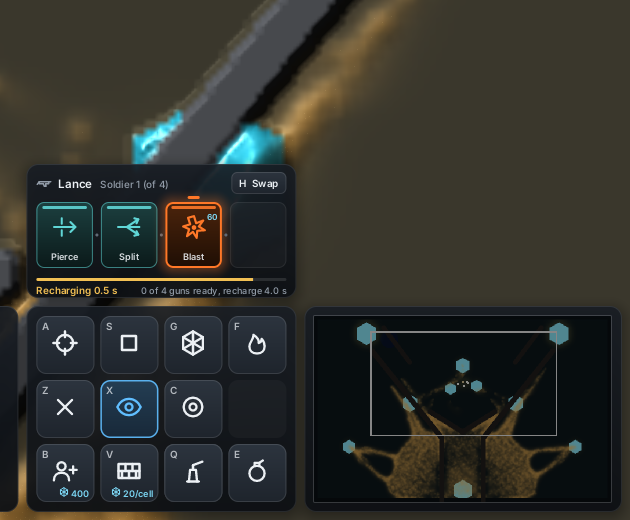
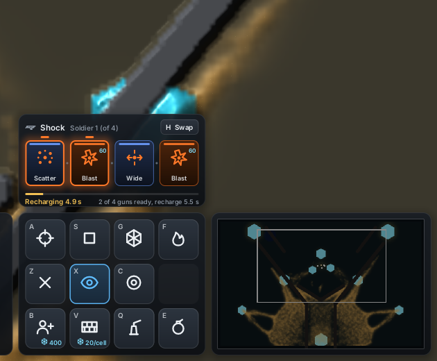
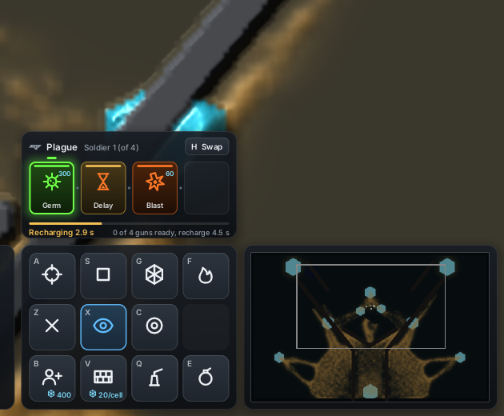
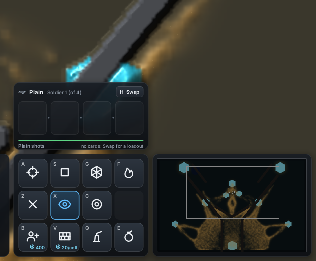
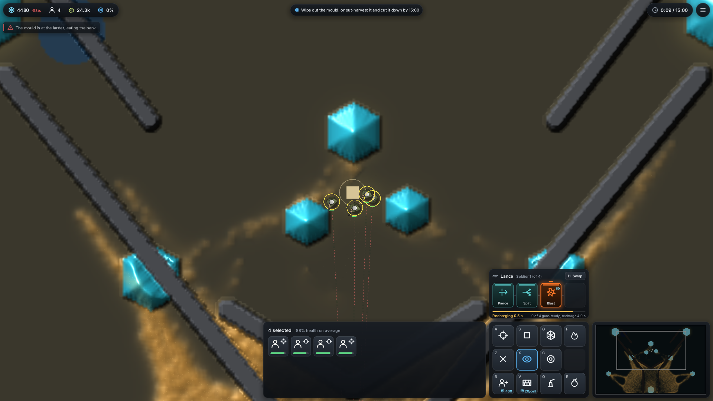

<title>Gun Card Panel</title>
<meta name="claude:viewport-fit-sides" content="cover">
<link rel="stylesheet" href="https://fonts.googleapis.com/css2?family=Inter:wght@400;500;600&family=Space+Grotesk:wght@500;600&display=swap">
<style>
/* Layout: a film first, then a grid of loadouts, each picture with its counts under it. */
:root {
  --bg: #f2f4f6; --fg: #182028; --muted: #5a6572; --line: #d6dce2; --card: #ffffff;
  --payload: #c9601c; --modifier: #4a74d0; --trigger: #a87708; --flight: #18908f;
  --display: "Space Grotesk", "Inter", system-ui, sans-serif;
  --body: "Inter", system-ui, -apple-system, "Segoe UI", sans-serif;
}
@media (prefers-color-scheme: dark) { :root:not([data-theme="light"]) { --bg: #0d1115; --fg: #e8ecf0; --muted: #94a0ac; --line: #26303a; --card: #151b21; --payload: #ff9650; --modifier: #6c9cff; --trigger: #f2c054; --flight: #60d6d6; color-scheme: dark } }
:root[data-theme="dark"] { --bg: #0d1115; --fg: #e8ecf0; --muted: #94a0ac; --line: #26303a; --card: #151b21; --payload: #ff9650; --modifier: #6c9cff; --trigger: #f2c054; --flight: #60d6d6; color-scheme: dark }
body { background: var(--bg); color: var(--fg); font-family: var(--body); font-size: 15px; line-height: 1.55; }
main { max-width: 1100px; margin: 0 auto; padding-block: 32px 64px; padding-left: max(16px, env(safe-area-inset-left, 0px)); padding-right: max(16px, env(safe-area-inset-right, 0px)); display: grid; gap: 40px; }
h1 { font-family: var(--display); font-weight: 600; font-size: 2rem; margin: 0 0 8px; text-wrap: balance; }
h2 { font-family: var(--display); font-weight: 600; font-size: 1.25rem; margin: 0 0 6px; text-wrap: balance; }
p { margin: 0; max-width: 68ch; }
.lede { color: var(--muted); }
section { display: grid; gap: 14px; }
figure { margin: 0; background: var(--card); border: 1px solid var(--line); border-radius: 10px; overflow: hidden; display: grid; min-width: 0; }
figure img { display: block; width: 100%; height: auto; background: #000; }
figcaption { padding: 10px 14px 12px; font-size: 13.5px; color: var(--muted); }
figcaption b { color: var(--fg); font-weight: 600; }
.pair { display: grid; grid-template-columns: repeat(auto-fit, minmax(300px, 1fr)); gap: 18px; }
.grid { display: grid; grid-template-columns: repeat(auto-fit, minmax(260px, 1fr)); gap: 18px; }
.kinds { display: flex; flex-wrap: wrap; gap: 8px 18px; font-size: 13.5px; }
.kinds span { display: inline-flex; align-items: center; gap: 6px; }
.kinds i { width: 22px; height: 4px; border-radius: 2px; display: inline-block; }
code { font-size: 0.9em; }
ul { margin: 0; padding-left: 20px; max-width: 72ch; }
li + li { margin-top: 4px; }
</style>
<main>
  <header>
    <h1>Gun card panel</h1>
    <p class="lede">Larder World's HUD now shows the squad's gun cards, on the command card's top edge. Every picture is the real window, rendered without a screen on the cloud's software Vulkan (llvmpipe), on Fork at 1920 x 1080, with four soldiers standing their ground (<code>hand=stand bank=5000</code>).</p>
  </header>

  <section>
    <h2>How to read it</h2>
    <ul>
      <li>The cards sit in the gun's four slots, left to right, in the order they fire. Empty slots stay empty.</li>
      <li>The <b>lit cards</b> with a notch above them are the cast the shown soldier's next hit fires. A cast is any modifiers and trigger, then the payload they change.</li>
      <li>The bar fills back up after the last cast. Under it: Ready or Recharging, and how many of the selected guns are ready.</li>
      <li>Hover a card for what it does, with this round's numbers. <b>H</b> or the <b>Swap</b> button changes loadout.</li>
    </ul>
    <div class="kinds" aria-label="Card frames">
      <span><i style="background:var(--payload)"></i>Payload: its own colour, the same as its bullets</span>
      <span><i style="background:var(--modifier)"></i>Modifier</span>
      <span><i style="background:var(--trigger)"></i>Trigger</span>
      <span><i style="background:var(--flight)"></i>Flight</span>
    </div>
  </section>

  <section>
    <h2>A round of Lull, 5 to 12 s</h2>
    <p>Quiet + Gas, then Quiet + Blast. Watch the lit pair move from the gas cast to the blast cast after each hit, then the bar empty and refill over the 5 s recharge. One frame every quarter game second.</p>
    <figure>
      
      <figcaption>By 5 s: <b>8 casts</b> (4 blast, 4 gas), 30 walkers killed by rounds, 840 food spent. By 12 s: <b>16 casts</b> (8 blast, 8 gas), 112 killed, 1,680 food spent, none skipped for food.</figcaption>
    </figure>
  </section>

  <section>
    <h2>Tooltips</h2>
    <div class="pair">
      <figure>
        
        <figcaption><b>Trap</b> at 9 s, cursor on Thick: the trigger waits for 40 walkers within 5 cells, at most 30 s. 8 casts, 473 walkers killed, 1 lodged.</figcaption>
      </figure>
      <figure>
        
        <figcaption><b>Lull</b> at 9 s, cursor on Gas: a payload shows its price, 150 food a cast. 14 casts, 78 killed.</figcaption>
      </figure>
    </div>
  </section>

  <section>
    <h2>Other loadouts at 9 s</h2>
    <div class="grid">
      <figure>
        
        <figcaption><b>Lance</b>: Pierce and Split ride every bullet, so they are never lit as a cast. 8 casts, 184 killed by rounds.</figcaption>
      </figure>
      <figure>
        
        <figcaption><b>Shock</b>: two casts, Scatter + Blast and Wide + Blast. 13 casts, 450 killed.</figcaption>
      </figure>
      <figure>
        
        <figcaption><b>Plague</b> from the command line: the GPU has no germ yet, and its tooltip says so (H skips it in play). 8 blasts cast, 8 germs not on this world.</figcaption>
      </figure>
      <figure>
        
        <figcaption><b>Plain</b>: no cards, four empty slots and a pointer to Swap, so the loadouts can be found. 217 walkers killed by shots.</figcaption>
      </figure>
    </div>
  </section>

  <section>
    <h2>The whole screen</h2>
    <figure>
      
      <figcaption>Lance at 9 s. The panel adds about 0.01 ms of CPU a frame for the model and HUD layout (0.070 to 0.114 ms against 0.058 to 0.087 ms, 3 runs each).</figcaption>
    </figure>
  </section>
</main>
